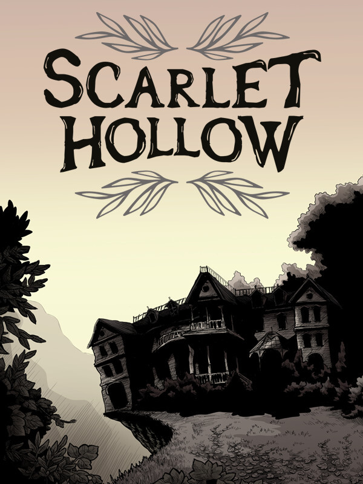

Scarlet Hollow: Episode 1
Scarlet Hollow: Episode 1
Details
|  | |
| Playtime | 3h 10m 0s |
| Last Activity | 2021-06-09 23:30:33 |
| Added | 2023-08-11 0:29:08 |
| Modified | 2025-10-02 9:44:15 |
| Completion Status | Completed |
| Library | Steam |
| Source | Steam |
| Platform | Macintosh PC (Linux) PC (Windows) |
| Release Date | 2020-09-25 |
| Community Score | |
| Critic Score | |
| User Score | |
| Genre | Adventure Indie Role-playing (RPG) Visual Novel |
| Developer | Black Tabby Games |
| Publisher | Black Tabby Games |
| Feature | Single Player |
| Links | Steam Itch Twitch Official Website YouTube Subreddit |
| Tag | Adventure Atmospheric Choices Matter Choose Your Own Adventure Dark Comedy Female Protagonist Horror Interactive Fiction Investigation LGBTQ+ Multiple Endings Mystery Point & Click Psychological Horror RPG Story Rich Supernatural Thriller Visual Novel Walking Simulator |
Description
Note — we are retiring this store page. While the build of Episode 1 here will be kept up-to-date with the current state of the game, please download the DEMO from the main Scarlet Hollow store page. Thank you and have fun!
This page is a free demo for Scarlet Hollow that contains the entire first episode. If you'd like to purchase the rest of the game, we're releasing it episodically on our Early Access page. Episode 4 is out now on that page, and we'll update that build with future episodes as they release. All of your Episode 1 saves should automatically transfer to the full game as well.
Trapped in the dying Appalachian mining town of Scarlet Hollow for the funeral of your estranged aunt, you quickly find yourself at the center of a dark mystery that threatens your life.
From award-winning graphic novelist Abby Howard, Scarlet Hollow is a horror visual novel and adventure game where your choices deeply matter. Hand-drawn backgrounds and sprites work together with a complex relationship system to bring to life an immersive world of charming (and terrifying) characters. Who lives, who dies, and the fate of an entire town rests on your shoulders.
Features
A heavily branching narrative where your choices matter. The relationships you forge and the decisions you make will dramatically alter your journey.
Good jokes and good spooks.
A complex relationship system that changes how characters act around you. Characters don't just like or dislike you. Become friendly rivals, bitter adversaries, best friends, or mild acquaintances based on how you approach the story.
Trait-based dialogue and role-playing. Scarlet Hollow's dialogue system is driven by role-playing elements that let you choose who you want to be. Are you quiet and observant? Hot and clueless? Over a dozen different character builds change how you interact with the world and how your story unfolds.
Original monster designs. Every monster and supernatural being in the game is an original Abby Howard design-- you won't find any predictable vampires or zombies here.
Five romance options. Whether you're into goths, dads, plant-lovers, Youtubers, or skeletal boys, we've got all your bases covered.
Dozens of meticulously hand-drawn and traditionally inked backgrounds. Every background in the game is meticulously drawn by hand and inked on massive 19x24 inch paper.
Hundreds of hand-drawn, immersive sprites. Each major character has dozens of hand-drawn sprites that interact with backgrounds and capture a full range of lighting and emotion.